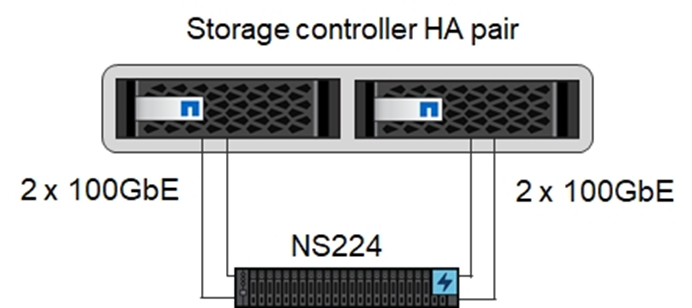
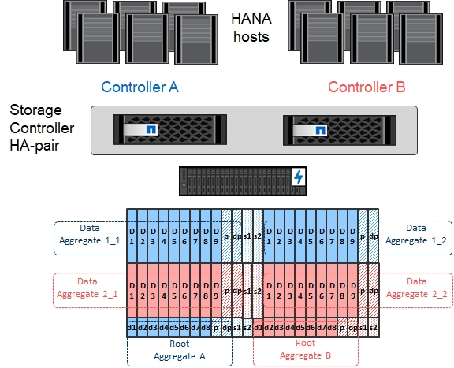
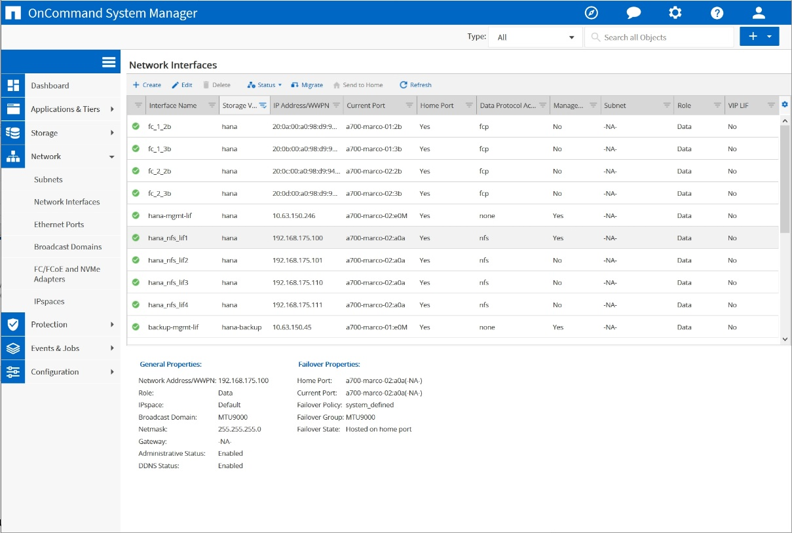
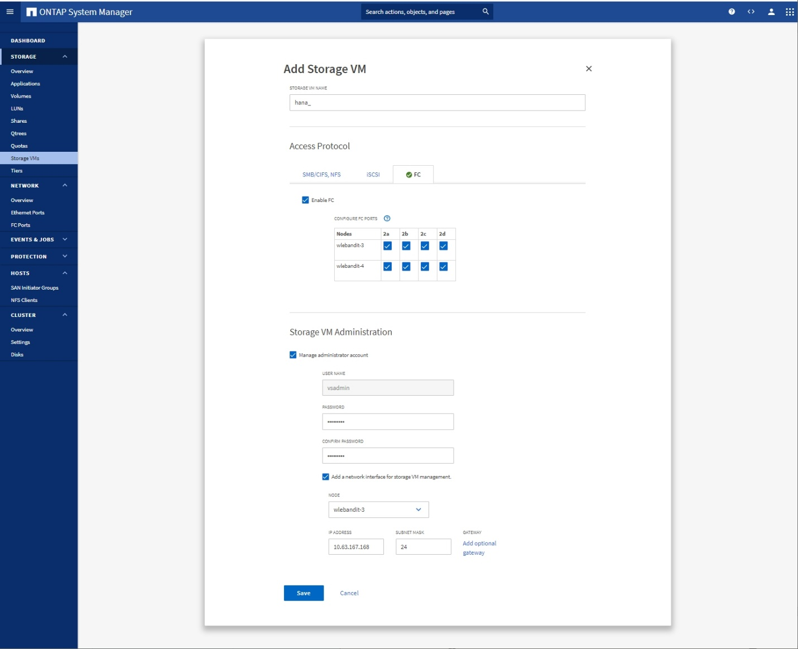
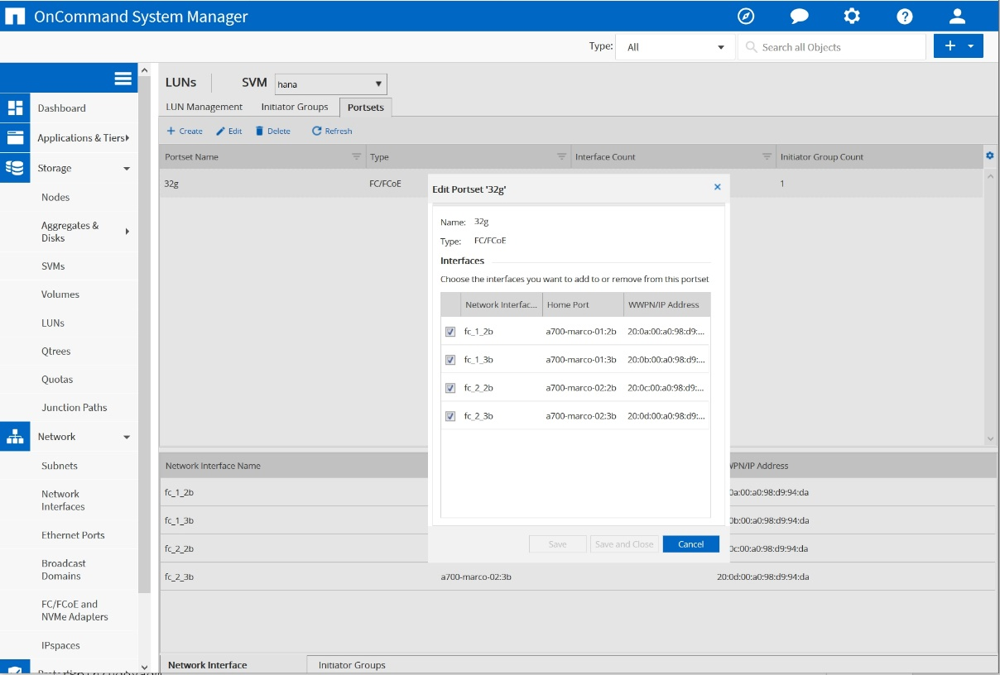
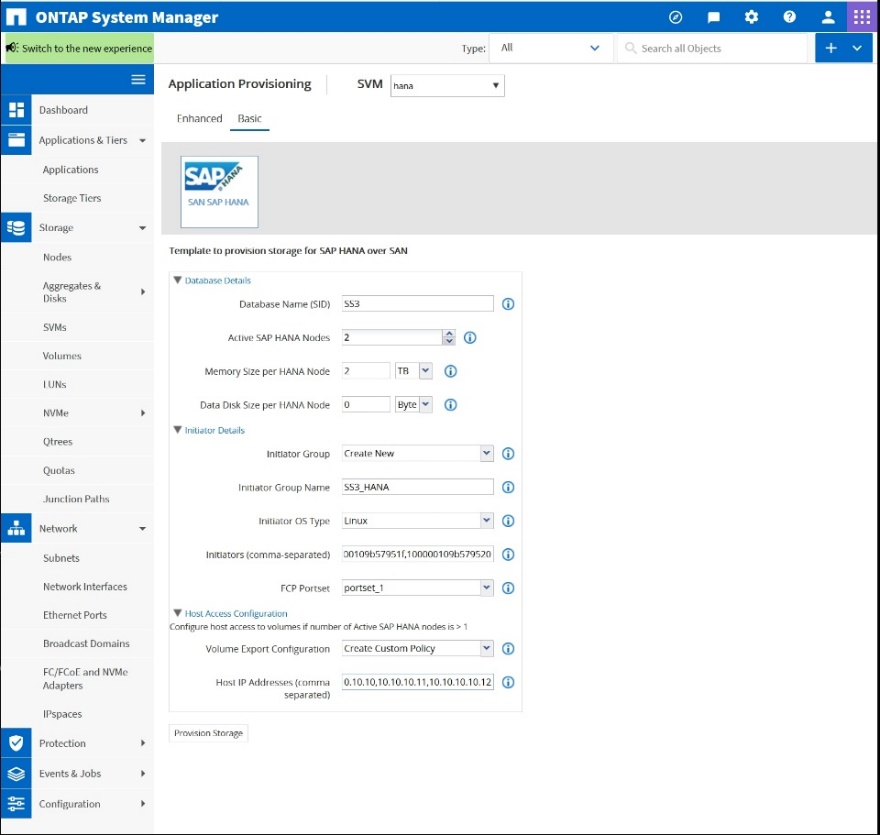
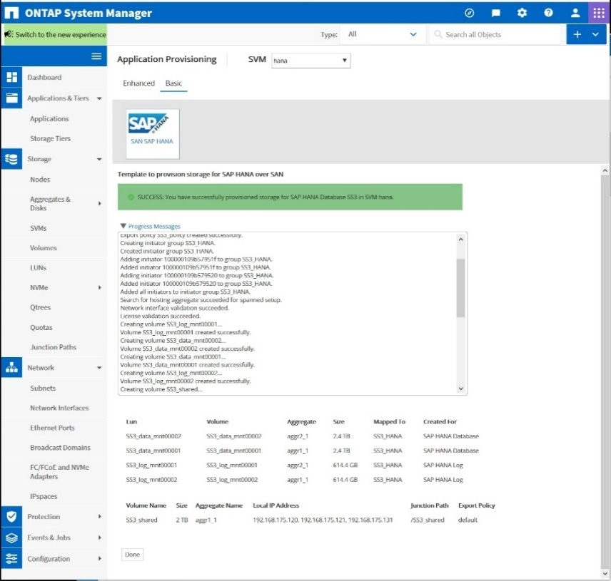

要求變更文件
要求變更文件 編輯此頁面
編輯此頁面 瞭解如何作出貢獻
瞭解如何作出貢獻儲存控制器設定
本節說明NetApp儲存系統的組態。您必須根據對應Data ONTAP 的《安裝與組態指南》完成主要安裝與設定。
儲存效率
SSD組態中的SAP HANA支援即時重複資料刪除、跨Volume即時重複資料刪除、即時壓縮及即時資料壓縮。
NetApp Volume Encryption
SAP HANA支援使用NetApp Volume Encryption（NVE）。
服務品質
QoS可用於限制共享控制器上特定SAP HANA系統或無SAP應用程式的儲存處理量。其中一個使用案例是限制開發與測試系統的處理量、使其無法影響混合式設定中的正式作業系統。
在調整規模的過程中、您應該決定非正式作業系統的效能需求。開發與測試系統的規模可以較低的效能值、通常在SAP定義的正式作業系統KPI的20%至50%範圍內。
從ONTAP 供應功能表9開始、QoS會在儲存磁碟區層級上設定、並使用處理量（Mbps）和I/O（IOPS）的最大值。
大寫入I/O對儲存系統的效能影響最大。因此、QoS處理量限制應設定為資料和記錄磁碟區中對應寫入SAP HANA儲存效能KPI值的百分比。
NetApp FabricPool
NetApp FabricPool 的支援技術不得用於SAP HANA系統中的主動式主要檔案系統。這包括資料和記錄區域的檔案系統、以及「/HANA /共享」檔案系統。如此會導致無法預測的效能、尤其是在SAP HANA系統啟動期間。
您可以在FabricPool 備份目標（例如SnapVault 、SnapMirror或SnapMirror目的地）上、使用純Snapshot分層原則和支援功能。

|
使用支援在一線儲存設備上分層Snapshot複本、或使用支援還原的功能來變更資料庫還原與還原所需的時間、或是建立系統複本或修復系統等其他工作。FabricPool FabricPool在規劃整體生命週期管理策略時、請將此納入考量、並確認使用此功能時仍符合SLA要求。 |
將記錄備份移至另一個儲存層的理想選擇。FabricPool移動備份會影響SAP HANA資料庫的恢復時間。因此、「分層-最低-冷卻天數」選項應設定為在本機快速儲存層上放置記錄備份的值、而這是恢復時的例行需求。
設定儲存設備
以下總覽摘要說明所需的儲存組態步驟。後續章節將詳細說明每個步驟。在本節中、我們假設已設定儲存硬體、ONTAP 且已安裝此功能。此外、儲存FCP連接埠與SAN架構之間的連線也必須已就緒。
-
檢查正確的磁碟櫃組態、如「[Disk shelf connection]。」
-
建立及設定所需的集合體、如「[Aggregate configuration]。」
-
創建儲存虛擬機（SVM）、如「[Storage virtual machine configuration]。」
-
創建邏輯介面（l生命）、如「[Logical interface configuration]。」
-
建立連接埠集、如「[FCP port sets]。」
-
在集合體中建立啟動器群組、磁碟區和LUN、如建立"[LUNs and volumes and mapping LUNs to initiator groups]。」
磁碟櫃連線
SAS型磁碟櫃
最多可將一個磁碟櫃連接至一個SAS堆疊、以提供SAP HANA主機所需的效能、如下圖所示。每個機櫃內的磁碟必須平均分散於HA配對的兩個控制器之間。ADPv2可搭配ONTAP 使用於更新的DS224C磁碟櫃。
|
|
使用DS224C磁碟櫃時、也可以使用四路徑SAS纜線、但不需要。 |

NVMe（100GbE）型磁碟櫃
每個NS224 NVMe桌面櫃都連接每個控制器兩個100GbE連接埠、如下圖所示。每個機櫃內的磁碟必須平均分配給HA配對的兩個控制器。ADPv2也用於NS224磁碟櫃。

Aggregate組態
一般而言、每個控制器都必須設定兩個Aggregate、獨立於使用的磁碟櫃或磁碟技術（SSD或HDD）。您必須執行此步驟、才能使用所有可用的控制器資源。對於VA200系列系統、只需一個資料Aggregate就足夠了。AFF
下圖顯示12台SAP HANA主機的組態、這些主機執行於12Gb SAS機櫃上、並設定ADPv2。每個儲存控制器連接六台SAP HANA主機。配置四個獨立的集合體、每個儲存控制器各兩個。每個Aggregate都配置有11個磁碟、其中有9個資料和兩個同位元檢查磁碟分割區。每個控制器都有兩個備用磁碟分割可供使用。

儲存虛擬機器組態
SAP HANA資料庫的多個SAP環境可以使用單一SVM。如有必要、也可將SVM指派給每個SAP環境、以便由公司內的不同團隊進行管理。
如果在建立新的SVM時自動建立並指派QoS設定檔、請從SVM移除此自動建立的設定檔、以確保SAP HANA達到所需的效能：
vserver modify -vserver <svm-name> -qos-policy-group none
邏輯介面組態
在儲存叢集組態中、必須建立一個網路介面（LIF）、並將其指派給專屬的FCP連接埠。例如、如果基於效能考量、需要四個FCP連接埠、則必須建立四個生命期。下圖顯示了在「Hana」SVM上設定的八部LIF（稱為「fc_*」）的快照。

在使用ONTAP NetApp 9.8 System Manager建立SVM期間、您可以選取所有必要的實體FCP連接埠、而且每個實體連接埠會自動建立一個LIF。

FCP連接埠集
FCP連接埠集用於定義特定啟動器群組要使用的生命期。一般而言、針對HANA系統所建立的所有LIF都會放置在相同的連接埠集中。下圖顯示名稱為32g的連接埠集組態、其中包含已建立的四個LIF。

|
|
使用NetApp 9.8時、不需要連接埠集、但可透過命令列建立及使用。ONTAP |
SAP HANA單一主機系統的Volume與LUN組態
下圖顯示四個單一主機SAP HANA系統的Volume組態。每個SAP HANA系統的資料和記錄磁碟區都會分散到不同的儲存控制器。例如、控制器A上已設定Volume「ID1_data_mnt00001」、而控制器B上已設定Volume「ID1_log_mnt00001」在每個磁碟區中、都會設定一個LUN。
|
|
如果SAP HANA系統只使用HA配對的一個儲存控制器、資料磁碟區和記錄磁碟區也可以儲存在同一個儲存控制器上。 |

每部SAP HANA主機都會設定資料Volume、記錄Volume和「/HANA /共享」的Volume。下表顯示四個SAP HANA單一主機系統的組態範例。
| 目的 | 控制器A的Aggregate 1 | 控制器A的Aggregate 2 | 控制器B的Aggregate 1 | 控制器B的Aggregate 2 |
|---|---|---|---|---|
系統SID1的資料、記錄和共享磁碟區 |
資料Volume：SID1_data_mnt00001 |
共享Volume：SID1_shared |
– |
記錄磁碟區：SID1_log_mnt00001 |
系統SID2的資料、記錄和共享磁碟區 |
– |
記錄磁碟區：SID2_log_mnt00001 |
資料Volume：SID2_data_mnt00001 |
共享Volume：SID2_shared |
系統SID3的資料、記錄和共享磁碟區 |
共享Volume：SID3_shared |
資料Volume：SID3_data_mnt00001 |
記錄磁碟區：SID3_log_mnt00001 |
– |
系統SID4的資料、記錄和共享磁碟區 |
記錄磁碟區：SID4_log_mnt00001 |
– |
共享Volume：SID4_shared |
資料Volume：SID4_data_mnt00001 |
下表顯示單一主機系統的掛載點組態範例。
| LUN | SAP HANA主機的掛載點 | 附註 |
|---|---|---|
SID1_data_mnt00001 |
/HANA /資料/ SID1/mnt00001 |
使用/etc/Fstab項目掛載 |
SID1_log_mnt00001 |
/HANA / log / SID1/mnt00001 |
使用/etc/Fstab項目掛載 |
SID1_shared |
/HANA /共享/ SID1 |
使用/etc/Fstab項目掛載 |
|
|
使用上述組態時、儲存使用者SID1adm預設主目錄的「/usr/sid1」目錄會儲存在本機磁碟上。在使用磁碟型複寫的災難恢復設定中、NetApp建議在「USP/SAP/SID1」目錄的「ID1_shared」磁碟區內建立額外的LUN、以便所有檔案系統都位於中央儲存設備上。 |
使用Linux LVM的SAP HANA單一主機系統的Volume與LUN組態
Linux LVM可用來提高效能、並解決LUN大小限制。LVM Volume群組的不同LUN應儲存在不同的Aggregate中、並儲存在不同的控制器上。下表顯示每個磁碟區群組兩個LUN的範例。
|
|
不需要搭配多個LUN使用LVM、就能達成SAP HANA KPI。單一LUN設定即符合所需的KPI。 |
| 目的 | 控制器A的Aggregate 1 | 控制器A的Aggregate 2 | 控制器B的Aggregate 1 | 控制器B的Aggregate 2 |
|---|---|---|---|---|
資料、記錄及共用磁碟區、適用於以LVM為基礎的系統 |
資料Volume：SID1_data_mnt00001 |
共享Volume：SID1_Shared Log2 Volume：SID1_log2_mnt00001 |
Data2 Volume：SID1_data2_mnt00001 |
記錄磁碟區：SID1_log_mnt00001 |
在SAP HANA主機上、需要建立和掛載Volume群組和邏輯磁碟區、如下表所示。
| 邏輯磁碟區/LUN | SAP HANA主機的掛載點 | 附註 |
|---|---|---|
lv：SID1_data_mnt0000-vol |
/HANA /資料/ SID1/mnt00001 |
使用/etc/Fstab項目掛載 |
lv：SID1_log_mnt001-vol |
/HANA / log / SID1/mnt00001 |
使用/etc/Fstab項目掛載 |
LUN：SID1_shared |
/HANA /共享/ SID1 |
使用/etc/Fstab項目掛載 |
|
|
使用上述組態時、儲存使用者SID1adm預設主目錄的「/usr/sid1」目錄會儲存在本機磁碟上。在使用磁碟型複寫的災難恢復設定中、NetApp建議在「USP/SAP/SID1」目錄的「ID1_shared」磁碟區內建立額外的LUN、以便所有檔案系統都位於中央儲存設備上。 |
SAP HANA多主機系統的Volume與LUN組態
下圖顯示4+1多主機SAP HANA系統的Volume組態。每個SAP HANA主機的資料磁碟區和記錄磁碟區都會分散到不同的儲存控制器。例如、控制器A上已設定磁碟區「ID_data_mnt00001」、控制器B上已設定磁碟區「ID_log_mnt00001」每個磁碟區內都會設定一個LUN。
「/HANA /共享」磁碟區必須可供所有HANA主機存取、因此必須使用NFS匯出。雖然「/Hana /共享」檔案系統沒有特定的效能KPI、但NetApp建議使用10Gb乙太網路連線。
|
|
如果SAP HANA系統只使用HA配對的一個儲存控制器、資料和記錄磁碟區也可以儲存在同一個儲存控制器上。 |
|
|
NetApp ASA AFF 支援NFS作為傳輸協定、NetApp建議在AFF 「/Hana /共享」檔案系統中使用額外的功能不全或FAS 不全。 |

每部SAP HANA主機都會建立一個資料磁碟區和一個記錄磁碟區。SAP HANA系統的所有主機都會使用「/HANA /共享」磁碟區。下表顯示4+1多主機SAP HANA系統的組態範例。
| 目的 | 控制器A的Aggregate 1 | 控制器A的Aggregate 2 | 控制器B的Aggregate 1 | 控制器B的Aggregate 2 |
|---|---|---|---|---|
節點1的資料與記錄磁碟區 |
資料磁碟區：SID_data_mnt00001 |
– |
記錄磁碟區：SID_log_mnt00001 |
– |
節點2的資料與記錄磁碟區 |
記錄磁碟區：SID_log_mnt00002 |
– |
資料Volume：SID_data_mnt00002 |
– |
節點3的資料與記錄磁碟區 |
– |
資料Volume：SID_data_mnt00003 |
– |
記錄磁碟區：SID_log_mnt00003 |
節點4的資料與記錄磁碟區 |
– |
記錄磁碟區：SID_log_mnt00004 |
– |
資料Volume：SID_data_mnt00004 |
所有主機的共享Volume |
共享Volume：SID_Shared |
– |
– |
– |
下表顯示具有四台作用中SAP HANA主機的多主機系統的組態和掛載點。
| LUN或Volume | SAP HANA主機的掛載點 | 附註 |
|---|---|---|
LUN：SID_data_mnt00001 |
/HANA /資料/SID/mnt00001 |
使用儲存連接器安裝 |
LUN：SID_log_mnt00001 |
/HANA /記錄/SID/mnt00001 |
使用儲存連接器安裝 |
LUN：SID_data_mnt00002 |
/HANA /資料/SID/mnt00002 |
使用儲存連接器安裝 |
LUN：SID_log_mnt00002 |
/HANA /記錄/SID/mnt00002 |
使用儲存連接器安裝 |
LUN：SID_data_mnt00003 |
/HANA /資料/SID/mnt00003 |
使用儲存連接器安裝 |
LUN：SID_log_mnt00003 |
/HANA /記錄/SID/mnt00003 |
使用儲存連接器安裝 |
LUN：SID_data_mnt00004 |
/HANA /資料/SID/mnt00004 |
使用儲存連接器安裝 |
LUN：SID_log_mnt00004 |
/HANA /記錄/SID/mnt00004 |
使用儲存連接器安裝 |
Volume：SID_Shared |
/HANA /共享 |
使用NFS和/etc/Fstab項目安裝在所有主機上 |
|
|
使用上述組態時、儲存使用者SIDadm預設主目錄的「/usr/sap/sID」目錄、會位於每個HANA主機的本機磁碟上。在採用磁碟型複寫的災難恢復設定中、NetApp建議在「usr/sap/sid」檔案系統的「ID_shared」磁碟區中建立四個子目錄、以便每個資料庫主機在中央儲存設備上都擁有其所有檔案系統。 |
使用Linux LVM的SAP HANA多主機系統的Volume與LUN組態
Linux LVM可用來提高效能、並解決LUN大小限制。LVM Volume群組的不同LUN應儲存在不同的Aggregate中、並儲存在不同的控制器上。
|
|
不需要使用LVM合併多個LUN來達成SAP HANA KPI。單一LUN設定即符合所需的KPI。 |
下表顯示2+1 SAP HANA多主機系統每個Volume群組兩個LUN的範例。
| 目的 | 控制器A的Aggregate 1 | 控制器A的Aggregate 2 | 控制器B的Aggregate 1 | 控制器B的Aggregate 2 |
|---|---|---|---|---|
節點1的資料與記錄磁碟區 |
資料磁碟區：SID_data_mnt00001 |
Log2 Volume：SID_log2_mnt00001 |
記錄磁碟區：SID_log_mnt00001 |
Data2 Volume：SID_data2_mnt00001 |
節點2的資料與記錄磁碟區 |
Log2 Volume：SID_log2_mnt00002 |
資料Volume：SID_data_mnt00002 |
Data2 Volume：SID_data2_mnt00002 |
記錄磁碟區：SID_log_mnt00002 |
所有主機的共享Volume |
共享Volume：SID_Shared |
– |
– |
– |
在SAP HANA主機上、需要建立和掛載Volume群組和邏輯磁碟區、如下表所示。
| 邏輯Volume（lv）或Volume | SAP HANA主機的掛載點 | 附註 |
|---|---|---|
lv：SID_data_mnt001-vol |
/HANA /資料/SID/mnt00001 |
使用儲存連接器安裝 |
lv：SID_log_mnt001-vol |
/HANA /記錄/SID/mnt00001 |
使用儲存連接器安裝 |
lv：SID_data_mnt00002-vol |
/HANA /資料/SID/mnt00002 |
使用儲存連接器安裝 |
lv：SID_log_mnt00002-vol |
/HANA /記錄/SID/mnt00002 |
使用儲存連接器安裝 |
Volume：SID_Shared |
/HANA /共享 |
使用NFS和/etc/Fstab項目安裝在所有主機上 |
|
|
使用上述組態時、儲存使用者SIDadm預設主目錄的「/usr/sap/sID」目錄、會位於每個HANA主機的本機磁碟上。在採用磁碟型複寫的災難恢復設定中、NetApp建議在「usr/sap/sid」檔案系統的「ID_shared」磁碟區中建立四個子目錄、以便每個資料庫主機在中央儲存設備上都擁有其所有檔案系統。 |
Volume選項
下表所列的Volume選項必須在所有SVM上進行驗證和設定。
| 行動 | |
|---|---|
停用自動Snapshot複本 |
Vol modify–vserver <vserver-name>-volume <volname>-snapshot policy nONE |
停用Snapshot目錄的可見度 |
Vol modify -vserver <vserver-name>-volume <volname>-snapdir-access假 |
建立LUN、磁碟區、並將LUN對應至啟動器群組
您可以使用NetApp ONTAP 功能區系統管理程式來建立儲存磁碟區和LUN、並將它們對應至伺服器。
NetApp提供一套自動化應用程式精靈、可在ONTAP 支援SAP HANA的過程中、於支援NetApp的更新版本9.7及更早版本、大幅簡化了Volume與LUN的資源配置程序。它會根據NetApp的SAP HANA最佳實務做法、自動建立及設定磁碟區和LUN。
使用「sanlun」工具、執行下列命令以取得每個SAP HANA主機的全球連接埠名稱（WWPN）：
stlrx300s8-6:~ # sanlun fcp show adapter /sbin/udevadm /sbin/udevadm host0 ...... WWPN:2100000e1e163700 host1 ...... WWPN:2100000e1e163701
|
|
「ianlun」工具是NetApp主機公用程式的一部分、必須安裝在每個SAP HANA主機上。如需詳細資訊、請參閱「host_setup」一節。 |
下列步驟顯示使用SID SS3的2+1多主機HANA系統組態：
-
在System Manager中啟動SAP HANA的應用程式資源配置精靈、並提供必要資訊。必須新增所有主機的所有啟動器（WWPN）。

-
確認已成功配置儲存設備。

使用CLI建立LUN、磁碟區、並將LUN對應至啟動器群組
本節說明使用ONTAP 指令行的組態範例、其中使用支援支援支援2 + 1的SAP HANA多主機系統、使用使用LVM的SID FC5、以及每個LVM Volume群組的兩個LUN：
-
建立所有必要的磁碟區。
vol create -volume FC5_data_mnt00001 -aggregate aggr1_1 -size 1200g -snapshot-policy none -foreground true -encrypt false -space-guarantee none vol create -volume FC5_log_mnt00002 -aggregate aggr2_1 -size 280g -snapshot-policy none -foreground true -encrypt false -space-guarantee none vol create -volume FC5_log_mnt00001 -aggregate aggr1_2 -size 280g -snapshot-policy none -foreground true -encrypt false -space-guarantee none vol create -volume FC5_data_mnt00002 -aggregate aggr2_2 -size 1200g -snapshot-policy none -foreground true -encrypt false -space-guarantee none vol create -volume FC5_data2_mnt00001 -aggregate aggr1_2 -size 1200g -snapshot-policy none -foreground true -encrypt false -space-guarantee none vol create -volume FC5_log2_mnt00002 -aggregate aggr2_2 -size 280g -snapshot-policy none -foreground true -encrypt false -space-guarantee none vol create -volume FC5_log2_mnt00001 -aggregate aggr1_1 -size 280g -snapshot-policy none -foreground true -encrypt false -space-guarantee none vol create -volume FC5_data2_mnt00002 -aggregate aggr2_1 -size 1200g -snapshot-policy none -foreground true -encrypt false -space-guarantee nonevol create -volume FC5_shared -aggregate aggr1_1 -size 512g -state online -policy default -snapshot-policy none -junction-path /FC5_shared -encrypt false -space-guarantee none
-
建立所有LUN。
lun create -path /vol/FC5_data_mnt00001/FC5_data_mnt00001 -size 1t -ostype linux -space-reserve disabled -space-allocation disabled -class regular lun create -path /vol/FC5_data2_mnt00001/FC5_data2_mnt00001 -size 1t -ostype linux -space-reserve disabled -space-allocation disabled -class regular lun create -path /vol/FC5_data_mnt00002/FC5_data_mnt00002 -size 1t -ostype linux -space-reserve disabled -space-allocation disabled -class regular lun create -path /vol/FC5_data2_mnt00002/FC5_data2_mnt00002 -size 1t -ostype linux -space-reserve disabled -space-allocation disabled -class regular lun create -path /vol/FC5_log_mnt00001/FC5_log_mnt00001 -size 260g -ostype linux -space-reserve disabled -space-allocation disabled -class regular lun create -path /vol/FC5_log2_mnt00001/FC5_log2_mnt00001 -size 260g -ostype linux -space-reserve disabled -space-allocation disabled -class regular lun create -path /vol/FC5_log_mnt00002/FC5_log_mnt00002 -size 260g -ostype linux -space-reserve disabled -space-allocation disabled -class regular lun create -path /vol/FC5_log2_mnt00002/FC5_log2_mnt00002 -size 260g -ostype linux -space-reserve disabled -space-allocation disabled -class regular
-
為屬於系統FC5的所有伺服器建立啟動器群組。
lun igroup create -igroup HANA-FC5 -protocol fcp -ostype linux -initiator 10000090fadcc5fa,10000090fadcc5fb, 10000090fadcc5c1,10000090fadcc5c2,10000090fadcc5c3,10000090fadcc5c4 -vserver hana
-
將所有LUN對應至已建立的啟動器群組。
lun map -path /vol/FC5_data_mnt00001/FC5_data_mnt00001 -igroup HANA-FC5 lun map -path /vol/FC5_data2_mnt00001/FC5_data2_mnt00001 -igroup HANA-FC5 lun map -path /vol/FC5_data_mnt00002/FC5_data_mnt00002 -igroup HANA-FC5 lun map -path /vol/FC5_data2_mnt00002/FC5_data2_mnt00002 -igroup HANA-FC5 lun map -path /vol/FC5_log_mnt00001/FC5_log_mnt00001 -igroup HANA-FC5 lun map -path /vol/FC5_log2_mnt00001/FC5_log2_mnt00001 -igroup HANA-FC5 lun map -path /vol/FC5_log_mnt00002/FC5_log_mnt00002 -igroup HANA-FC5 lun map -path /vol/FC5_log2_mnt00002/FC5_log2_mnt00002 -igroup HANA-FC5